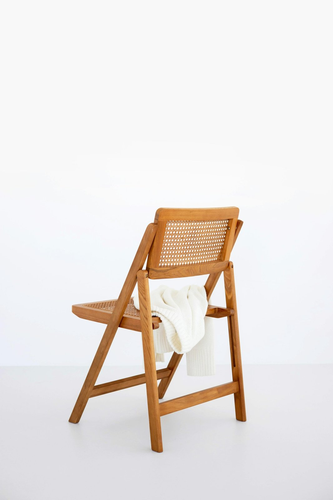

To‘qima stul
MEBELYog‘och / to‘qima · namunaviy tavsif
1 290 000 so‘mNamuna narxi
KONSEPT KATALOG · NARX VA XUSUSIYATLAR NAMUNAVIY

F / 001FORMA / TANLANGAN OBYEKTLAR
Materialning o‘z ovozi bor. Uni eshitish uchun ba’zan bitta buyum yetarli.
TANLANGAN KOLLEKSIYA
Kategoriyani tanlang, buyumni yaqindan ko‘ring va savatga qo‘shing. Xarid ro‘yxatini fayl qilib olishingiz mumkin.
Yog‘och / to‘qima · namunaviy tavsif
Metall / mato · namunaviy tavsif
Keramika · namunaviy tavsif
O‘YLANGAN TANLOV
Uydagi yorug‘lik, o‘lcham va kundalik odatlaringizdan boshlang. Uchta kichik savol tanlovni osonlashtiradi.
Joyning eni, bo‘yi va balandligini o‘lchang. Eshik ochilishi, yo‘lak va o‘tirish uchun yetarli masofa qoldiring. Bu katalogdagi o‘lchamlar demo sifatida berilgan.
Parvarish, namlik, quyosh va foydalanish tezligini hisobga oling. Haqiqiy mahsulotda material hamda kafolatni sotuvchidan tekshiring.
Bu mustaqil katalog namunasi. Savat faqat shu brauzerda saqlanadi. Buyurtma, to‘lov yoki yetkazish amalga oshirilmaydi; tanlov matn fayli sifatida olinadi.